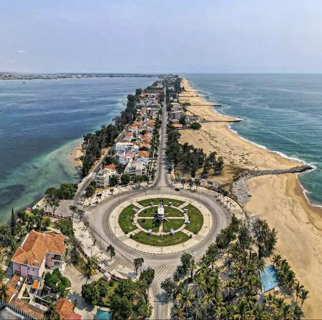

A Restinga de Lobito, também conhecida como **Ponta da Restinga**, é um acidente geográfico do tipo **restinga** em Angola.
Ela forma a baía de Lobito e abriga uma parte da cidade de Lobito, na província de Benguela.
Com cerca de 10km de extensão, a Ponta da Restinga se estende desde a Colina da Saudade até o Farol do Ponto
Final. Suas faixas litorâneas opostas distam de 200 a 300 metros.
A Ponta da Restinga é densamente povoada e seu território é altamente valorizado para fins imobiliários e turísticos.
Ela serve como residência para a classe média alta da cidade de Lobito.
O banco de areia que forma a Restinga de Lobito começou a surgir no século XVII (17), devido ao assoreamento provocado pelas marés.
Seu crescimento foi detido no século XX (20), com a construção de pontões, evitando que a baía do Lobito, fundamental
para o Porto do Lobito, se fechasse à navegação.
A Restinga de Lobito é um verdadeiro cartão-postal da região, com suas praias e o arrulhar do mar entre as casuarinas.
 Restinga, Lobito, Benguela, AO
Restinga, Lobito, Benguela, AO
Características: